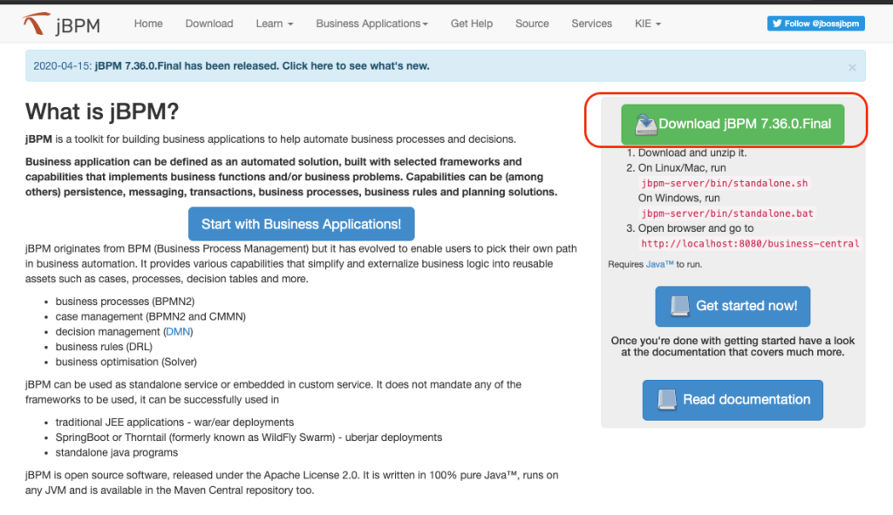

Getting Started with jBPM
Being familiar your BA tool guides to better decision taking on development and architecture decisions. Let’s start by learning a little bit more about the core components and about jBPM installation.
jBPM main components
jBPM is mainly based on two components: Business Central and Kie Server. Reinforcing the concepts: business central is the authoring and monitoring environment. Kie Server is the engine, where the execution of business assets happens.
In a business automation project with jBPM, during the application design phase the architect must take into consideration the determination of the architecture regarding the business automation services:
- Will this project require the usage of Business Central to manage the engines?
- Or will we scale the engine using docker containers managed by Kubernetes in a CI/CD fashion?
- Will we deploy projects via business central, or just promote projects using an automation and integration tool?
- How should the development environment for business assets be like?
- Can we decouple business rules from the rest of the projects?
- Should we embed the engine or deploy it remotely?
There are many ways to architect business applications and address the specific needs of development, operations, and business teams. The jBPM Getting Started series will bring possible architectures in later on in a post about Advanced Architecting , including information about enterprise cloud architectures for business automation projects.
Getting familiar with jBPM
Business automation involves managing projects and business assets in a friendly way, for all the personas involved in the project. Let’s get started by performing some basic tasks using jBPM. The tool is available for download in the official site http://jbpm.org.
Cloud-ready kjars can run on Java Application Servers, Spring Boot, Thorntail, or Web Server Container (tomcat). For our first try, we will work with WildFly, an open-source Application Server (also known as JBoss in earlier versions).
The first hands-on guides you through a setup of jBPM in a local environment.
Hands On – Running on WildFly
Wildfly, also known as JBoss Enterprise Application Platform (JBoss EAP), is an open-source option of a Java EE Application Server. It is widely used in critical environments and it has been proven stable over the years. jBPM website provides a ready-to-use jBPM installed on top of WildFly.
To download and install jBPM follow these steps:
- Access the website http://jbpm.org and click on the download button to get the latest version. A download will start, and you will have a zip file with a name similar to jbpm-server-7.x.x.Final-dist.zip.

2. Extract the files from the downloaded package into a folder of your preference. WildFly is extracted and jBPM is available and configured.- The three steps below can be executed on Linux and Unix machines to install and start jBPM.
# Create a folder dir for your instalation $ mkdir ~/learn-jbpm # Unzip the downloaded file into opt folder $ unzip jbpm-server-7.36.0.Final-dist.zip -d ~/learn-jbpm/opt/jbpm # Enter jBPM folder $ cd ~/learn-jbpm/jbpm # Start jBPM $ ./bin/standalone.sh
- The server will bootstrap and start both jBPM applications deployed within it: Business Central ( http://localhost:8080/business-central ) and Kie Server ( http://localhost:8080/kie-server/ ). The default environment makes usage of a volatile database, H2.
jBPM on WildFly: Authentication and Authorization
The default installation comes with predefined users and their respective roles. Here are some of the users which you can use in this lab. The password is equal to the username.
| Username | Roles |
| wbadmin | admin,analyst,user,process-admin,kie-server |
| krisv | admin,analyst,user,process-admin,kie-server |
| maciek | admin,analyst,user,PM,HR,kie-server |
 | jBPM uses the Java Authentication and Authorization Service (JAAS) provided by WildFly login module. Later on upcoming blog posts we’ll understand how to integrate with authentication and authorization using Keycloak. |
WildFly users and groups are defined within application-users.properties and application-roles.properties files. Both files are located under $WILDFLY_HOME/standalone/configuration directory. In our jBPM installation, the standalone.xml file has customization that changes the used files to configure users and roles. The new files used are users.properties and roles.properties respectively. The following code sets this customization within the standalone.xml file:
<security-realm name="ApplicationRealm">
...
<authentication>
<local default-user="$local" allowed-users="*" skip-group-loading="true"/>
<properties path="users.properties" relative-to=“jboss.server.config.dir"/>
</authentication>
<authorization>
<properties path="roles.properties" relative-to="jboss.server.config.dir"/>
</authorization>
</security-realm>
In this post, we will use the users.properties and roles.properties provided by the out-of-the-box authentication and authorization configuration.
In higher environments (like UAT or production), this auth strategy is not recommended. jBPM should connect to external authorization and authentication providers like LDAP or Keycloak.
The next topics provides an introduction on how to run jBPM on Spring-boot and Docker.
Hands On – Running on Spring Boot
jBPM community also provides a website that allows you to easily create business applications using Spring Boot. To try this approach, download a business application with all the required structure to be executed on-premise or in the cloud.
- Access http://start.jbpm.org and click on Generate default business application.A zip file will be downloaded with the name business-application.zip. It contains a business application configured to run on Spring Boot and using the latest release of jBPM.
- In order to view and start this application, unzip the “business-application.zip” file. Using terminal, you can do unzip it, and check the structure with the following commands:
→ unzip business-application.zip -d ~/learn-jbpm/labs/hello-sb-jbpm → tree -L 2 hello-sb-jbpm
This design of business application consists of three (or more) projects: a module for the business assets, a module for the application models, and another one for the services. It is possible to have multiple modules of each type, this decision should match the environment and application requirements.
- You may notice that only Kie Server will be available after start-up. This is because the business application does not embed Business Central into Spring Boot, but its engine can be connected to a remote Business Central for deployment and monitoring capabilities.
- In the service application, launch scripts are available to start the environment locally or in a cloud platform like OpenShift. Enter into the “business-application-service” folder, and execute the launch.sh command:
cd ~/learn-jbpm/labs/hello-sb-jbpm/business-application-service/ sh launch.sh clean install
You will notice that Maven starts downloading the project dependencies in order to build and compile the whole project. Once services are up and running you should be able to access them in: http://localhost:8090/rest/server . You can test it with the default user wbadmin and password wbadmin.
The code example below shows how the users and roles are defined within com.company.service.DefaultWebSecurityConfig class in the service project:
@Autowired
public void configureGlobal(AuthenticationManagerBuilder auth) throws Exception {
auth.inMemoryAuthentication().withUser("user").password("user").roles("kie-server");
auth.inMemoryAuthentication().withUser("wbadmin").password("wbadmin").roles("admin");
auth.inMemoryAuthentication().withUser("kieserver").password("kieserver1!").roles("kie-server");
}
In a development environment when the user is not connecting to external authorization tools like Keycloak, this is where users can alter roles and groups.
Hands On – jBPM Docker Image
jBPM community also works to provide docker images into Docker Hub repository. There are currently three images:
Let’s try the jbpm-server-full image. This image provides a full authoring and execution environment running on top of WildFly. It is really simple to run a container with the latest project version:
$ docker run -p 8080:8080 -p 8001:8001 -d --name jbpm-server-full jboss/jbpm-server-full:latest
This should start a container, exposing the port 8080 to enables access to Business Central and Kie Server, and port 8001 to enable importing and exporting projects using git:
$ docker ps
This startup command does not map any volume, so be aware that work executed inside this Docker container is not persisted. It is possible to follow the server logs if necessary (change 06 with your docker container id):
$ docker logs -f jbpm-server-full
jBPM is started, and both services are running:
- Business Central: http://localhost:8080/business-central or http://localhost:8080/jbpm-console
- Kie Server: http://localhost:8080/kie-server/
To stop the docker container, use the following command. This command should stop the instance which is running jBPM server.
$ docker stop jbpm-server-full
Three possible ways to work with jBPM were presented: jBPM deployed in WildFly application server; business applications deployed within spring-boot; docker image with a ready to use jBPM deployed in a WildFly Application Server.
On the next blog post, we’ll check the main components of jBPM and how we can start using them towards a business automation project delivery.
<
p class=”has-text-align-center”>This blog post is part of the third section of the jBPM Getting started series: Automate your business with jBPM